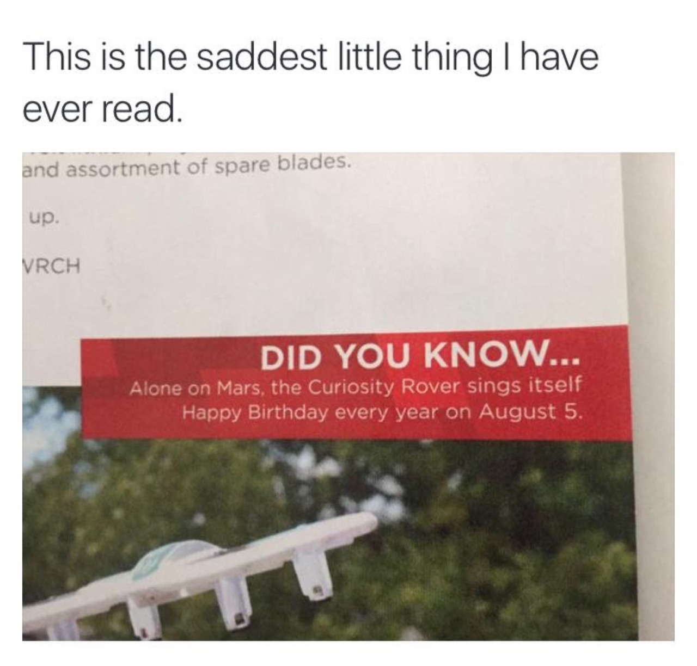

Send me to Mars with party supplies before next august 5th
No guys you don’t understand.
The soil testing equipment on Curiosity makes a buzzing noise and the pitch of the noise changes depending on what part of an experiment Curiosity is performing, this is the way Curiosity sings to itself.
So some of the finest minds currently alive decided to take incredibly expensive important scientific equipment and mess with it until they worked out how to move in just the right way to sing Happy Birthday, then someone made a cake on Curiosity’s birthday and took it into Mission control so that a room full of brilliant scientists and engineers could throw a birthday party for a non-autonomous robot 225 million kilometres away and listen to it sing the first ever song sung on Mars*, which was Happy Birthday.
This isn’t a sad story, this a happy story about the ridiculousness of humans and the way we love things. We built a little robot and called it Curiosity and flung it into the star to go and explore places we can’t get to because it’s name is in our nature and then just because we could, we taught it how to sing.
That’s not sad, that’s awesome.
*this is different from the first song ever played on mars (Reach For The Stars by Will.I.Am) which happened the year before, singing is different from playing
This is humanity
Happy Birthday, Curiousity.
Happy birthday, Curiosity.